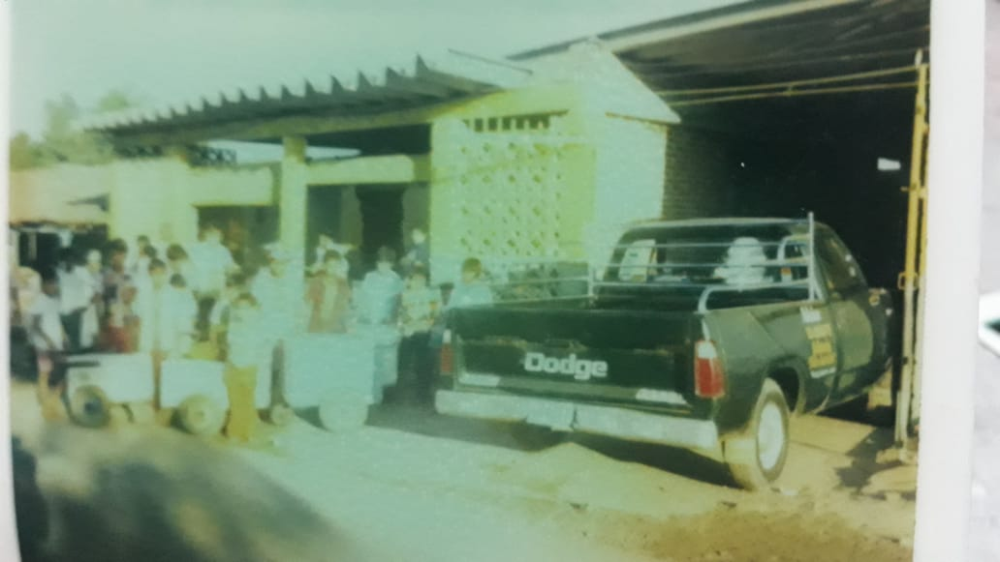
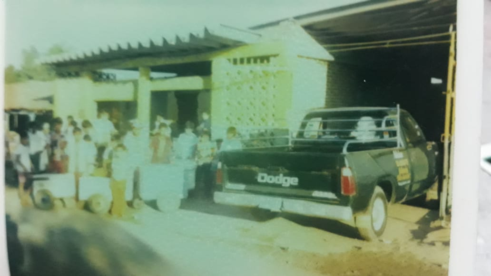

La vida es como un helado disfrutala antes de que se derrita
| Inicio | Productos |
HISTORIA DE NUESTRO SABOR
El inicio de la paleteria comenzo en los años 60´s con el personaje principal de toda esta historia, Don Manuel Avila Rodriguez y Doña Olga Salas Leon(mis abuelos) decidiendo fundar una paleteria en su úblo natal Silacayuapan, Oaxaca. pero por motivos de fuerza mayor tuvieron que salir y emprendieron su camino trasladándose al estado de Veracruz donde nacieron donde nacieron dos de mis tíos y de ahí nuevamente se trasladaron hacia Salina Cruz, Exitos de Crespo. En ese entonces la paleteria se llamo "Yolanda", despues "ATM"(a toda maquina). Años depués se mudaron a Pinotepa Nacional donde la paleteria se llamó "El Gran Golpe" y fue en Pinotepa Nacional donde se establecieron permanentemente, el cual hasta el día de hoy existe llamandose "El golpe".
 

En la actualidad la paletaria Chepepe es como tambien una sucecion de tal historia, sin duda actualizada cada vez intentando ponerce al margen de hoy, aumentando sabores exoticos y variedades. ofreciendo lo mejor, con la psobilidad de crecer en el ambiente competitivo y tal vez insitando a los clientes a concumir mas sus productos con los buenos comentarios que esta tiene desde hace tiempo.
Tal vez a algunos no les paresca interesante pero es una forma de decir que se ha estado en competencia y mejorando con el tiempo.
 =Chepepe Avila =9541353064
=Chepepe Avila =9541353064